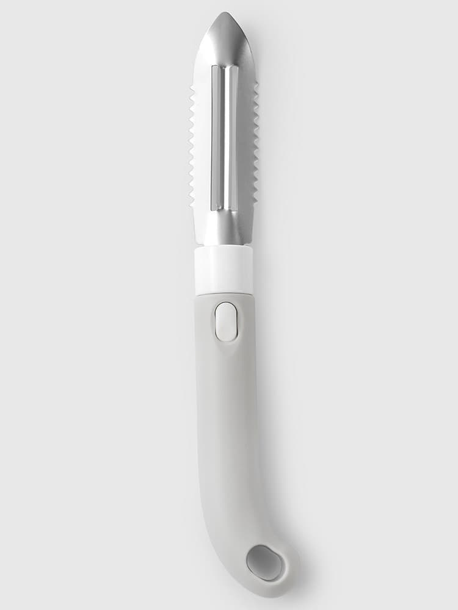
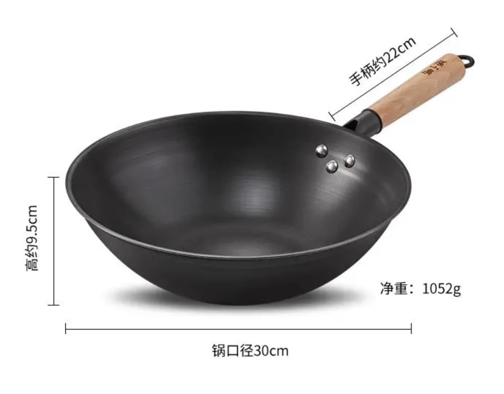

我的厨房用具、用法清单
这个清单里的所有东西都是我实际使用过挺长时间的，比较推荐，但可能不是你的最优解，仅供参考。
刀具
菜刀 | 十八子作 斩切刀
材质：30Cr13
我做菜就只用这一把刀，能切能斩能满足 99% 的中餐烹饪需求，重约 250g，不算轻。我没有配备磨刀石，偶尔在碗底磨几下，使用至今已有两年有余，锋利稍减。我这把刀其实相当一般，但是家用足矣。
关于菜刀的选择：
切片刀（文刀）的刀刃薄，斩砍刀（武刀）的刀刃厚，中餐一般使用这两把刀就够了，而斩切刀前切后斩（前刀刃薄、后刀刃厚）可以同时满足这两种需求。
菜刀的刀刃也是有不同形状的，一般不要选择刃形弧度太大的就行。刀把的形状也值得注意，只要握起来稳定、舒适就可以，不过我这把刀的刀把就很一般。选择刀具重量时需要注意即使一把刀净重 250g，但是实际使用体感通常大于 250g，因为手握刀把时刀具重心远离手，力臂增加，产生的力矩增加，需要手施加更多的力才能平衡这个力矩（也可以简化为杠杆原理）。
我其实不太在意刀具重量，甚至喜欢重一点的，掌握正确的用刀姿势（刀法）是可以省力又高效的。
关于刀的材质，不要选择铁刀，太古老了，容易生锈，用铁刀切过的食材也会容易带有铁锈味。选择不锈钢刀，然后进一步关注钢材的标号，比如 30Cr13 就是一个钢材标号，其中 30 表示碳含量，Cr13 表示铬含量。
碳含量越高，刀具质地越硬，柔韧性就更差，更容易断裂、崩口，更难磨但是也能保持更持久的锋利，所以切片刀建议选择高碳钢（40 及以上），斩砍刀就不能太硬了。铬含量越高表示不锈钢质量越好，一般选择 Cr13 及以上。
另外：磨刀每次摩擦都只向同一方向进行，不要来回摩擦，也不要太用力。磨刀石配备一块双面 400/800 目（或 300/600 目）的即可，体积不要太小一块（太小磨刀时不好发力），追求更锋利的可以再配备一块上千目的（家用一般不推荐）。
削皮刀 | 什物纪

这把刀最常用的就是正常的削皮功能，不分左右手都能使用，顶部的刀尖是有锋利度的，挖削土豆这种就很好用。然后两边的波浪形用来刮鱼鳞很方便。
我买活鱼基本都是拿回家自己杀、切片，店主帮忙杀的鱼的内脏、鳃、鱼鳞和筋膜等等一般都不会清理得非常干净，并且切片处理得也比较随意。
花梨木整木砧板
首先我不使用塑料、硅胶、不锈钢等等工业材质的砧板，它们各有各的难用。其次竹制砧板可以用但不推荐，竹制砧板大都需要使用胶合剂拼接竹子等各种碎木，增加健康安全风险，也经不住斩砍等使用，长期使用的竹制砧板容易开裂然后藏污纳垢甚至发霉。
我现在使用的砧板是一块 35cm * 24cm * 3cm（尺寸不大，适合 1~2 人家庭使用）的刚果花梨木整木砧板，这里面包含了我选择砧板的几个建议：
- 木头砧板；整木，无拼接；原木，无油漆
- 推荐花梨木，不推荐乌檀木、铁木，其他木头还没用过
- 要有一定厚度，不容易形变、开裂
另外：太硬的砧板会让刀更快的变得不锋利，也不适合斩砍（可能掉木渣）。
木头砧板需要注意保养，新砧板可以在清洗干净并晾干后涂上植物油阴晾一天，木头会吸收植物油，然后砧板使用起来会更「润」。砧板每次用完清洗干净后竖立放置于阴凉、干燥处，注意尽量保证砧板两面都能暴露在空气中（比如不要砧板一面贴墙放置），推荐使用砧板架（不锈钢的就可以）。
锅具
铁锅 | 张小泉 聚焰系列

限于客观条件我的厨房没有燃气灶，使用的是电磁炉作为热源，所以我现在使用的铁锅底部是有一定平面（不是纯平底锅）的，这样可以更稳定的放置在电磁炉上。
我这把铁锅还有一个很不错的点是锅边是有外翻折的，做菜时汤汁就不容易流挂到锅身。
铁锅通常还会分为生铁、熟铁，生铁含碳量高，更厚重（比如铸铁锅），适合炖煮；一般炒锅都使用熟铁。
使用铁锅一定要注意保养，新铁锅开锅能使用明火烧蓝开锅效果更好，电磁炉开锅效果较差。铁锅每次使用完清洗干净后最好都烧干抹油。
电磁炉 | 米家电磁炉 2
不是最佳推荐，但是好看，也算好用。如果要买建议买个延保。
半自动意式咖啡机 | 柏翠 PE3366
这个领域我不太懂，实际使用下来的感受有两个明显确定：
- 这台机器是单热泵，每次出水和蒸汽切换需要等待一两分钟，很麻烦，导致我现在很少想打奶泡了，直接用做 Dirty 的手法兑拿铁
- 机器压力比较小，导致出液油脂状态一般
如果不介意手动麻烦一点，其实用摩卡壶也挺不错的。
另外：口粮咖啡豆比较推荐 M Stand 家的，都挺好喝。
未完待续…